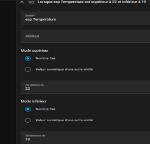

Prise en main d’une Raspberry Pi¶
Première utilisation d’une Raspberry Pi¶
En cas de difficultés à formater la carte SD afin de pouvoir flasher l’image de la raspberry pi, l’utilisation de MiniTool Partiton Wizard sera utile
{kind=link}
Insérez la carte micro SD dans votre ordinateur. S’il n’y a pas de partition dans la carte SD, il vaut mieux en créer une avec MiniTool, par la suite cliquer sur formater une partition
Téléchargez le « Raspberry Pi Imager » sur le lien suivant https://www.raspberrypi.com/software/ Suivez les étapes suivantes : Sélectionnez Raspberry Pi OS (other), Raspberry Pi OS Full (32-bit) Modifiez le Hostname en votre nom p Pour le stockage « Stockage », sélectionnez votre carte SD Cliquez sur Save puis sur Ecrire comme sur l’image suivante :
{kind=link}
Une fois que c’est fait, débranchez la carte micro SD et rebranchez là
Connexion en SSH¶
Activez la connexion ssh afin de pouvoir se connecter à la Raspberry Pi à distance Tuto suivi : https://www.raspberrypi.com/documentation/computers/remote-access.html Après avoir branché un micro SD une autre fois un nouveau lecteur ‘boot’ apparaît sur l’ordinateur Ouvrez le dossier ‘boot’ Créez un fichier vide nommé ssh Créez un fichier nommé ‘wpa_supplicant.conf’ et insérez dedans le code suivant :
country=FR
ctrl_interface=DIR=/var/run/wpa_supplicant GROUP=netdev
update_config=1
network={
ssid="NOM_DE_VOTRE_WIFI"
scan_ssid=1
psk="VOTRE_MOT_DE_PASSE"
key_mgmt=WPA-PSK
}
Avertissement
si vous n’arrivez pas à créer un fichier .conf, prenez n’importe quel fichier .txt que vous avez et renommer le avec la commande suivante : ren votre_fichier.txt wpa_supplicant.conf
Une fois que c’est fait insérez votre carte micro SD dans la Raspberry Pi Branchez votre Raspberry Pi à une alimentation Ouvrez un terminal sur votre ordinateur Trouvez votre IP à l’aide de l’application « Fing » téléchargée directement sur votre téléphone ou sur windows sur le lien suivant : https://www.fing.com/fing-desktop/fing-desktop-download-windows/ Maintenant vous pouvez faire un essai de la présence de votre carte Raspberry Pi avec la commande ping suivant de votre adresse IP trouvé précédemmentn vous devez avoir 0 paquets perdus (voir l’image suivante)
{kind=link}
Le ping est fait sans paquets perdus Maintenant que le ping est bien reussi, connectez-vous à la carte RaspberryPi avec la commande ssh suivi de votre_user@votre_adresse_ip Exemple : ssh lila@172.20.10.6 Entrez votre mot de passe ensuite cliquez sur Entrer Connexion réussie comme vous pouvez le voir sur l’image précédente Branchez votre câble USB Zigbee à la Raspberry Pi
Installation de Docker sur la carte Raspberry Pi¶
On va créer un conteneur docker avec Home Assistant, c’est la meilleure méthode à utiliser car ça nous permet de ne pas perdre les autres services de la carte Raspberry Pi, on va ajouter home assistant uniquement comme un plus pour cela suivez les étapes suivante : Installez docker avec la commande suivante :
curl -sSL https://get.docker.com | sh
Une fois que c’est fait : tapez la commande docker pour vérifier que docker est bel et bien installé (voir l’image suivante)
{kind=link}
Installez home assistant avec la commande suivante
pygments_style = 'sphinx'
docker run -d \
--name homeassistant \
--privileged \
--restart=unless-stopped \
-e TZ=MY_TIME_ZONE \
-v /Chemin/vers_votre/dossier:/config \
--network=host \
ghcr.io/home-assistant/home-assistant:stable
test = 5
veuillez remplacer Chemin/vers_votre/dossier par le dossier dans lequel vous voulez stocker vos fichiers de configuration Faites un ‘docker ps’ pour vérifier que votre home assistant est bien installé et en status up
{kind=link}
Accès à home assistant via la raspberry pi sur windows
Avertissement
pour se connecter avec homeassistant sur windows on doit juste installer Docker desktop et créer un dossier nommé HA par exemple et dans ce dossier on va créer un fichier compose.yml et un autre dossier config (comme sur Linux, vous allez trouver dans le reste de la documentation l’explication détaillée)
Home Assistant lancera une interface web sur le port 8123 de votre Raspberry Pi. Vous pouvez y accéder sur http://ADRESSE_IP:8123. Une fois que c’est fait, c’est maintenant le moment de se connecter à tous vos appareils intelligents et de commencer à jouer avec et créer des automatisations (oui c’est assez simple finalement) Une fois que Home assistant est lancé, créez votre maison connectée et cliquez sur paramètres, vous allez voir que le câble USB Zigbee est directement detecté comme sur l’image suivante
{kind=link}
On clique sur Zigbee Home Automation et on ajoute tous les appareils compatible avec Zigbee dedans (pour ma part j’ai ajouté un module fil pilote, un capteur de température/humidité et un capteur de mouvement) Cliquez ensuite sur Aperçu et si vous avez bien suivi les étapes précédentes vous aurez un tableau de bord comme sur l’image suivante :
{kind=link}
Création d’une automatisation sur home assistant¶
Cliquez sur paramètres, automatisations et scènes, créer sur automatisations, créer une nouvelle automatisation voir l’image suivante
{kind=link}
Suivez les étapes suivantes :
{kind=link}
Cliquez sur Ajouter une condition puis sur Entité, puis sur valeur numérique, vous allez obtenir cela :
{kind=link}
Maintenant on rajoute une action en cliquant sur ajouter une action puis sur appareil On choisit l’appareil qu’on veut déclencher ou éteindre, pour ma part j’ai choisi le Fan (ventilateur) il s’allume quand la température dépasse 22degré afin de la diminuer
{kind=link}
Voilà, vous avez crée une autre automatisation où le chauffage (Heater) s’allume si la température est au-dessous de 19degré. Vous pouvez également crée une automatisation qui consiste à recevoir une notification sur votre téléphone Une alerte vous disant d’ouvrir les fenêtres si la température ou l’humidité sont dans la zone rouge et ou d’éteindre le chauffage (le mettre en mode gel)
{kind=link}
{kind=link}